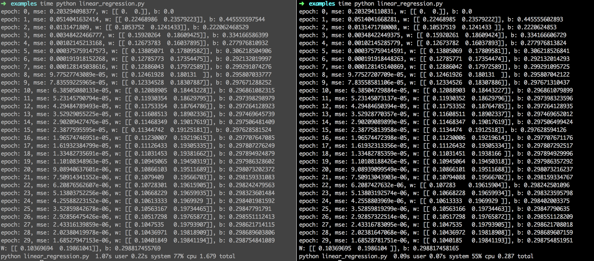

背景与目的 本着知其然知其所以然的原则，对TensorFlow的核心特性进行探索，希望通过代码落地方式加强认知与备忘。toytensorflow是对TensorFlow python API模拟的玩具小轮子，包括DAG、惰性求值、链式法则、自动求偏导、前向/后项算法等特性。https://github.com/nanjunxiao/toytensorflow
抽象四元素 1.operation
实现notes 以linear regression为例，loss = reduce_mean(square(matmul(X,W)+b - Y) )，构建的DAG如下图所示，实线表示前向计算，虚线表示BP反向传播
例子及效果 以linear regression为例，左图是TensorFlow结果，右图是toytensorflow结果，结果是一致的。
1 2 3 4 5 6 7 8 9 10 11 12 13 14 15 16 17 18 19 20 21 22 23 24 25 26 27 28 29 30 31 import toytensorflow as tfimport numpy as npnp.random.seed(1 ) x_data = np.float32(np.random.rand(2 ,100 ) ) y_data = np.dot([0.1 ,0.2 ], x_data) + 0.3 W = tf.Variable([[0.0 ,0.0 ] ], name='weight' ) b = tf.Variable(0.0 , name='bias' ) X = tf.placeholder(tf.float32) Y = tf.placeholder(tf.float32) predict = tf.matmul(W, X) + b loss = tf.reduce_mean(tf.square(predict - Y) ) learning_rate = 0.5 optimizer = tf.train.GradientDescentOptimizer(learning_rate) train_op = optimizer.minimize(loss) init = tf.initialize_all_variables() feed_dict = {X:x_data, Y:y_data} with tf.Session() as sess: sess.run(init) for epoch in range(30 ): mse = sess.run(loss, feed_dict=feed_dict) print 'epoch: {}, mse: {}, w: {}, b: {}' .format(epoch, mse, sess.run(W), sess.run(b)) sess.run(train_op, feed_dict=feed_dict) w_value = sess.run(W, feed_dict=feed_dict) b_value = sess.run(b, feed_dict=feed_dict) print('W: {}, b: {}' .format(w_value, b_value) )

TODO 1.添加更多的操作符